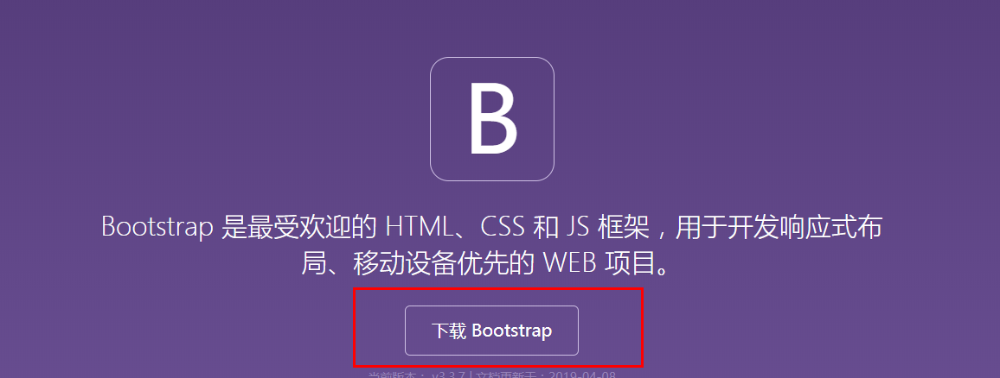
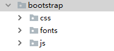
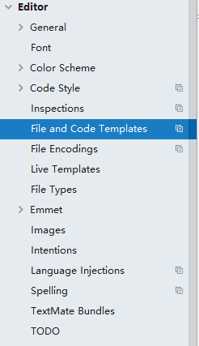
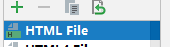
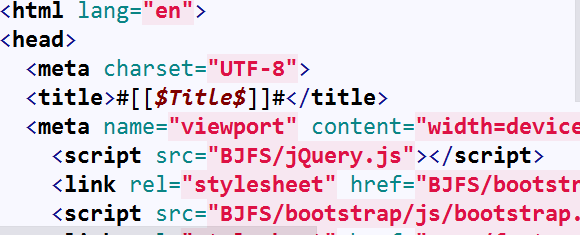
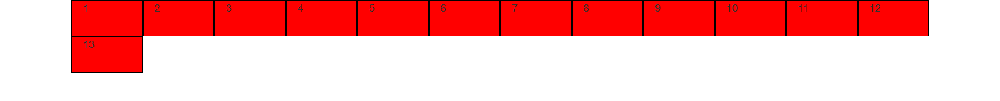
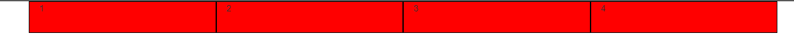
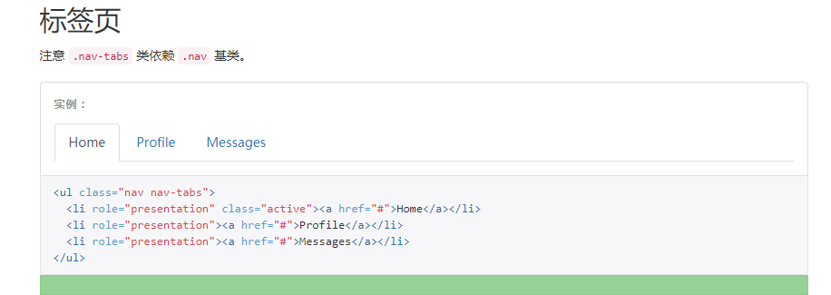
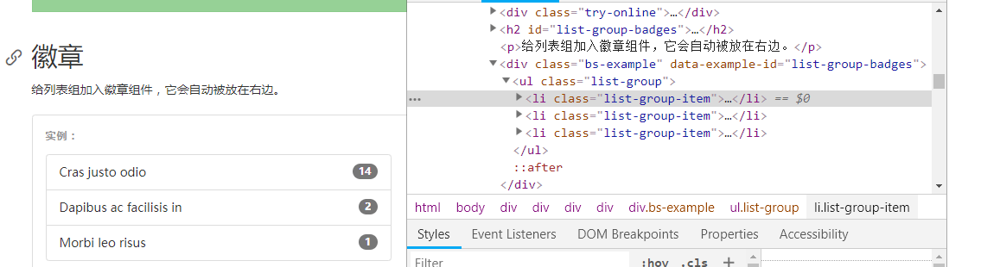

原文出处:本文由博客园博主日天达人提供。
原文连接:https://www.cnblogs.com/98WDJ/p/10685403.html
原文连接:https://www.cnblogs.com/98WDJ/p/10685403.html
一.安装
首先打开Bootstarp的官网：https://v3.bootcss.com

下载完成后，解压压缩包，把解压后的文件导入pycham中

在HTML页面中的style中导入bootstrap的css文件和js文件，建议导入min.css，体积更小
以我的文件路径为例：
<link rel="stylesheet" href="bootstrap/css/bootstrap.min.css">
<script src="bootstrap/js/bootstrap.js"></script>安装完成
二.更改pycharm的默认HTML页面(可跳过)
在pycharm中创建一个新的HTML页面，如果还想使用Bootstarp，只能重新导入上述路径
为了避免重复的工作，可以更改默认的HTML模板
1.打开setting，找到下面选项

2.找到HTML文件

3.更改右边的代码

更改模板完成
三.Bootstarp的使用：
1.栅格系统
Bootstarp的重要特性：栅格系统
官方的解释可以看官网：https://v3.bootcss.com/css/#grid
个人理解就是：在一个container的容器内，被行分隔,每一行分为12个单位的长度
//简单的模型
<div class='container'>
<div class='row'> </div>
<div class='row'> </div>
<div class='row'> </div>
</div>简单的测试一下：
//c1中没有设置宽度，只设置了div的高度
<div class="container">
<div class="row">
<div class="c1 col-lg-1 ">1</div>
<div class="c1 col-lg-1 ">2</div>
<div class="c1 col-lg-1 ">3</div>
<div class="c1 col-lg-1 ">4</div>
<div class="c1 col-lg-1 ">5</div>
<div class="c1 col-lg-1 ">6</div>
<div class="c1 col-lg-1 ">7</div>
<div class="c1 col-lg-1 ">8</div>
<div class="c1 col-lg-1 ">9</div>
<div class="c1 col-lg-1 ">10</div>
<div class="c1 col-lg-1 ">11</div>
<div class="c1 col-lg-1 ">12</div>
<div class="c1 col-lg-1 ">13</div>
</div>
</div>

.c1{
height: 50px;
background-color: red;
border: 1px black solid
}

可以看到一个container容器被分为12份，这是因为设置了col-lg-1的原因，该类可以从col-lg-1设置到col-lg-12，
<div class="container">
<div class="row">
<div class="c1 col-lg-3 ">1</div>
<div class="c1 col-lg-3 ">2</div>
<div class="c1 col-lg-3 ">3</div>
<div class="c1 col-lg-3 ">4</div>
</div>
</div>效果如下：

还有重要的一点：
每一行的每一个列还可以继续切分
效果如下：
做的比较丑，勿怪。。
代码：
<div class="container">
<div class="row">
//在这个div里面进行切分
<div class="c1 col-lg-3 row">
<div class="c1 col-lg-4 "></div>
<div class="c1 col-lg-4 "></div>
<div class="c1 col-lg-4 "></div>
</div>
//结束
<div class="c1 col-lg-3 ">2</div>
<div class="c1 col-lg-3 ">3</div>
<div class="c1 col-lg-3 ">4</div>
</div>
</div>
2.组件和各种控件的获取：
1.通过官网的复制粘贴获取：( ･´ω`･ )

直接复制代码，粘贴到你需要的地方
2.开发者模式：
F12进入开发者模式（每个浏览器可能不一样）

看中什么，选中什么，在右面的界面中，鼠标右键copy->copy outHtml，导入HTML文件中
好了，这个组件是你的了
四.多看官网。。。。
Bootstarp很多组件，在官网上有详细的介绍，请多多浏览官网